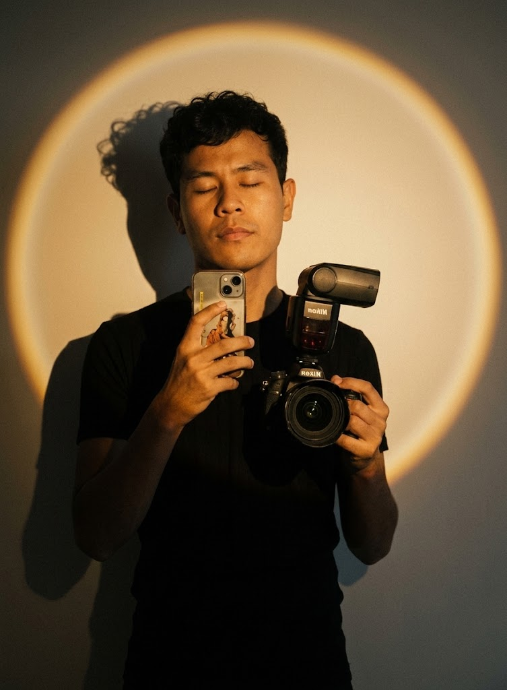

Жарық пен бұрыш
Адамды терезеге не алтын сағаттың жарығына қаратыңыз. Камераны сәл төменнен емес, көз деңгейінен ұстаңыз.
Телефоныңыз — сіздің студияңыз
Кәдімгі смартфонды кәсіби камера секілді қолдануды үйреніңіз. Жарық, композиция және динамиканы тәжірибе арқылы игеріңіз.

Негізгі ережелер
Адамды терезеге не алтын сағаттың жарығына қаратыңыз. Камераны сәл төменнен емес, көз деңгейінен ұстаңыз.
Торды қосып, басты нысанды сызықтардың қиылысына қойыңыз. Кадр бірден тыныстап, назарды дұрыс бағыттайды.
Екі қолмен ұстаңыз, шынтақты денеге тіреңіз. Қозғалыс керек болса, 60 FPS режимін қосыңыз.
Тәжірибе алаңы
Жарықты өзгертіп, кадр торын қосыңыз. Әрбір режим кадрдың көңіл күйін басқа қырынан ашады.
Түсірілімге дайындық
Әр түсірілімнің алдында осы тізімді басып шығыңыз. Бұл ұсақ әдеттер сапаны айтарлықтай көтереді.
0 / 5 орындалды
Құралдар қорабы
Жылдам монтаж, титр, ырғақ пен тренд эффектілері.
Қолмен баптау және кәсіби бейне параметрлері.
Түсті түзету, жарық және жеке пресеттер.
Таза интерфейс және көпқабатты монтаж.
Біліміңізді тексеріңіз
Жауапты таңдаңыз — нәтиже бірден көрінеді.
1. Портретті композицияда қай жерге қойған дұрыс?
2. Қозғалысты кейін баяулату үшін не пайдалы?
3. AE/AF lock не үшін қажет?